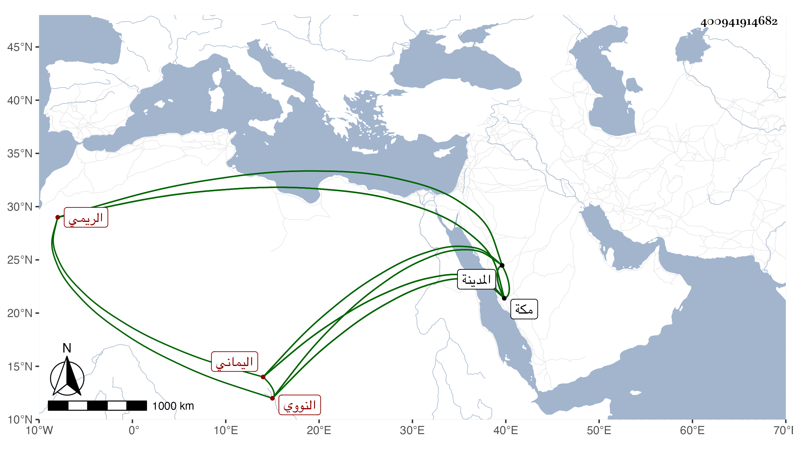

0902Sakhawi.DawLamic.ITO20230111-ara1.EIS1600.400941914682
Biography ID: 400941914682
أحمد بن عبد الرحمن بن علي بن أبي بكر بن أحمد بن مسعود الشهاب الريمي اليماني وأربعي النووي والبردة وقرأها بالمدينة على الأبشيطي ومحمد بن المراغي ، كان شافعيا فتحنبل وقرر في درس خير بك بمكة وصار ملازما للحنبلي في ذلك وغيره وهو المكي الآتي أبوه وابنه نزيل الكرام . ولد في أول ليلة من إحدى الجمادين سنة تسع وثلاثين وثمانمائة بمكة وحفظ القرآن ، وهو إنسان خير كثير الطواف والعبادة عليه سيما الخير زار المدينة غير مرة وصحب النجم عمر بن فهد وسمع منه ومن غيره كوالده التقي وأبي الفتح المراغي وقرأ الفاتحة على الزين ابن عياش وتكسب بفعل العمر ثم بإقراء الأولاد وكتب عنه ابن فهد :
| أهو مليح من أول حرف اسمه عين | إذا قلبته وجدته يا ولام في عين |
| جرح قلبي وأخذ عقلي حبيب العين | ترك دموعي تجري كشبه العين |
وكان في ظله ثم في رفد ولده وكذا لازمني بمكة في سماع أشياء وسمعت منه هذا .
